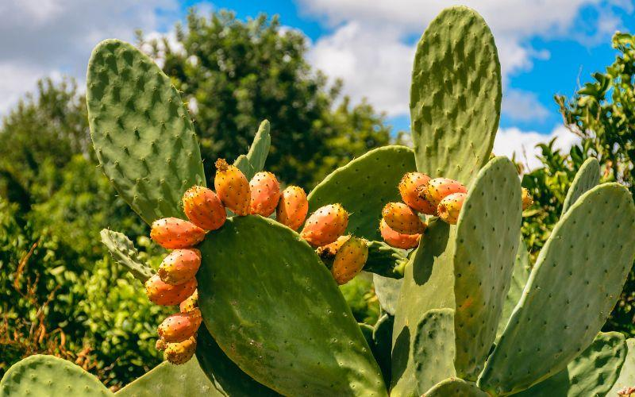

Nopal: Planta Sonorense
Crecimiento
El nopal se desarrolla en una gran diversidad de suelos, pero se sugiere que se plante en aquellos que tengan buena fertilidad, capa arable de al menos 30 centímetros, buen drenaje que evite los encharcamientos y cerca de alguna fuente de agua para riego, de esta manera, se aseguran altos rendimientos.
Flores
Florece una vez al año y tanto el fruto como la flor pueden ser de diversos colores, desde el amarillo hasta el rojo. El fruto maduro es una baya de forma ovalada con diámetros que oscilan entre 5,5 y 7 cm, una longitud de 5 cm a 11 cm y un peso variable entre 43 y 220 g.
Historia
La familia de los cactos – biznagas, tetechos, nopales y choyas – se originó en el continente americano y se distribuye naturalmente desde el sur de Canadá hasta la Patagonia, en Argentina. De las 1,400 especies de cactos, 670 viven en México, y de estas, 508 son endémicas. Este vegetal fue el alimento principal de los grupos chichimecas. Ellos lo llamaron "nohpalli", voz náhuatl que se transformó en "nopal" a la llegada de los españoles.